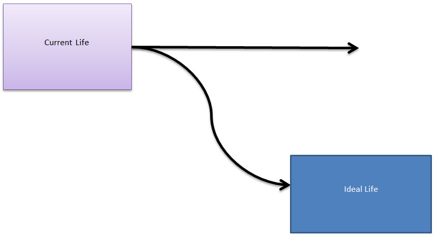

Are you up for a fun challenge?
Let me explain, but first…
What an interesting turn of events in Pahrump, Nevada: Diamond D's brothel began construction on an expansion of their building to increase their ever-growing business. In response, the local Baptist Church started a campaign to block the business from expanding -- with morning, afternoon, and evening prayer sessions at their church Work on Diamond D's progressed right up until the week before the grand re-opening when lightning struck the whorehouse and burned it to the ground! After the brothel burned to the ground by the lightning strike, the church folks were rather smug in their outlook, bragging about "the power of prayer." But late last week 'Big Jugs' Jill Diamond, the owner/madam, sued the church, the preacher and the entire congregation on the grounds that the church...... "was ultimately responsible for the demise of her building and her business -- either through direct or indirect divine actions or means." In its reply to the court, the church vehemently and vociferously denied any and all responsibility or any connection to the building's demise. The crusty old judge read through the plaintiff's complaint and the defendant's reply, and at the opening hearing he commented, "I don't know how the hell I'm going to decide this case, but it appears from the paperwork, that we now have a whorehouse owner who staunchly believes in the power of prayer.... and an entire church congregation that thinks it's all bullshit."
You know, there is a tendency for us to establish prayer affirmation campaigns that are based upon what we know.
- We want a nice car.
- We want a bigger house.
- We want more money.
Our wishes and our dreams are always based upon our experiences and what we know.
Ah.
What we know…
"The X-Files" Je Souhaite (TV Episode 2000) "Two brothers have a less than helpful genie who grants their wishes with disastrous consequences. Mulder comes into possession of the same genie, and his wishes garner similar results." There is a scene in the show when Moulder asks the genie what her very first wish was, way back when she first decided to make a wish to become a genie. She responds that back then all she wanted was a bag that was endlessly full of turnips. She then shrugs her shoulders. Saying, well, "hey, it was the dark ages".
Our wishes are based on what we know.
In the X-files episode titled “Je Souhaite”, a genie is found by some “white trailerpark trash” (poor Caucasian people, often near-illiterate, living in cheap housing in the countryside). Instead of wishing for “big and great things”, they wish for things that their limited perceptions can imagine…
- A boss with no mouth.
- A big boat. Much bigger than their house.
- A solid gold wheelchair.
- Invisibility.
- Bringing the dead back to life.
In the MWI, as we travel the various world-lines, the direction of travel and the duration of travel are all a function of [1] how cautious we are in our travels, and [2] how many world-lines that we must pass through. Distant goals and dreams, converted into prayers might take much longer than simple and easy desires.
No Limits
There are no limits as to what you can wish for. But there is a physical constraint.
The more unobtainable your wish is, the greater the number of world-lines that you must pass through.
- Easy goals – Maybe only a few thousand world-lines.
- Difficult goals – Maybe a few billion world-lines.
- “Impossible” goals – Maybe a trillion, trillion, trillion world-lines.
In extreme cases, the wish objective might require so many world-lines to traverse that you just physically cannot reach it in this lifetime.
So I urge people to have a prayer campaign that contains a mixture of 80% “realistic” achievable goals, and 20% goals that are “further out” in the MWI.
“Realistic goals” might include such things as…
- New Job or occupation.
- New house, car, physical possessions.
- Different relationships.
- Knowledge, skills, appearance.
- How others view you.
- Travel, adventure, love, romance, sex.
“Further out” goals, are obtainable, but might take some time to manifest.
- Having a large sum of money.
- Living in a strange place that you have never been before.
- Associating with certain groups of rich, wealthy, or famous people.
- Curing yourself of a bad illness or health issue.
- Influencing your community, city, or nation to do certain things.
“Impossible” goals aren’t really impossible. It’s just that the number of world-lines that you need to traverse might exceed that of your assigned life within this physical body.
- Reverse aging; at an extreme level.
- Becoming the richest, most popular, most famous, largest, etc (in a global population of 9 billion people.)
- Owning the “White House” in Washington, DC.
So, I urge everyone to conduct prayer campaigns that concentrate on a mixture of small / simple goals with about 20% being “further out” or more outrageous.
The challenge
Since “impossible goals” require such a large amount of time to manifest, we are going to concentrate on the “further out” goals. The beauty about these goals is that once they manifest you KNOW that it was the intention campaign that manifested them.
The key here is that the result must be so plainly obvious to you that there can be absolutely no chance of misunderstanding.
Planning
Oh, but it’s not all that easy.
You need to plan.
These goals and objectives are so far out that there is a greater change in getting entangled up with undesirable world-lines. You don’t want to aim for a goal and have bad things happen in the process, do you?
In Be Careful What You Wish For, a salesman arrives in New York City who can grant your deepest desire. However, it soon becomes apparent that each of the granted wishes cause more harm than good. ... Elsewhere in the city, the salesman stood outside a store and made his sales pitch. A woman, with many shopping bags, politely turned down the salesman and admitted she had gotten everything. The salesman coyly asked if he got everything she wanted. The woman looked into the suitcase and revealed she always wanted to be young again. He gave her the body of a baby. ... The salesman was in Central Park making his pitch to a freckled man. The man admitted he wouldn't mind having the good looks of another man nearby. The salesman obliged him and soon there were two heads on one body. ... In another part of the park, the salesman met a bicyclist. The bicyclist wished he could reconnect with his family and get back to his roots. The Salesman turned him into a tree. ... At the flea market, another man fell victim to Duophanes and wished he was made of money. Duophanes literally turned him into banknotes. The people around him scrambled to grab the money. -Ghostbusters Wiki
You will need to added specific “fail safe” affirmations so that you can avoid any pitfalls in your efforts to achieve your objectives.
We have discussed this in other posts. Just remember to make sure that in your journey to your goals that you avoid trouble, discomfort, and a trip that is far longer than you find comfortable. You need to put on a time limit (This will occur within five years, etc.).
Remember safety is important. Never neglect this.
Harmony
Now, you don’t want to seize things from others. You also don’t want to hurt anyone in the process. You want to be a neutral to the surroundings as possible with a great positive energy flow directed to your intended objectives.
The task
Ah…
You know, there are the “nay sayers” that want to say that it was just coincidence, or luck, or some other excuse that caused your dreams and goals to manifest. They just cannot get it through their thick skulls that the universe that the believe exists is a fairy tale. That the true reality is the MWI and world-line travel via thought. They don’t want that. They don’t want their illusions destroyed.
In your next prayer affirmation campaign, I would like you to add one singular item that is “extreme”. Or, in other words, once it manifests you will absolutely know beyond a shadow of a doubt that it came true because of your affirmation campaign.
Now, what I mean is that it must be something so unique, that you would want in you life. And it must be such that you just cannot ascribe it to random chance. It’s got to be unique.
Here’s some ideas.
- You’ve never dated a girl from Iceland. None of your friends have, and there isn’t a single person in your city, that you know of, that even knows a person from Iceland. So how about “meeting and dating an exceptionally beautiful person from Iceland”.
- Everyone has cars. You see them all the time. How about getting a rare or unusual car. Something that stands out and just cannot be ascribed to random chance? Or in other words…”what are the odds?”
- Or you can add something specific into your intention affirmations. Some minor thing. Like a set of numbers, or a name, or a color. “My house will have a house number with an ’88’ in it.“. Or “I will meet a girl wearing a fluorescent lime green dress with red polka-dots that will fall passionately in love with me.“
It does not matter what it is.
What does matter is the deviance from your present life-track be significant enough for you to identify what is going on.

The above illustration shows that the use of an “extreme goal” can cause a significant deviation from your current life path and track.
Some suggestions…
Plan accordingly. What you want is that the extreme goal fit in HARMONY with the rest of your other goals. Here’s some scripts that you might want to use.
- All of my intention objectives manifest in harmony with each other.
- At no time are there any discomfort, emotional or physical distress in the process of obtaining these goals and objectives.
- These goals will be realized within a three year window, and minor discomforts and stress are acceptable as long as danger, trouble, and catastrophe are avoided.